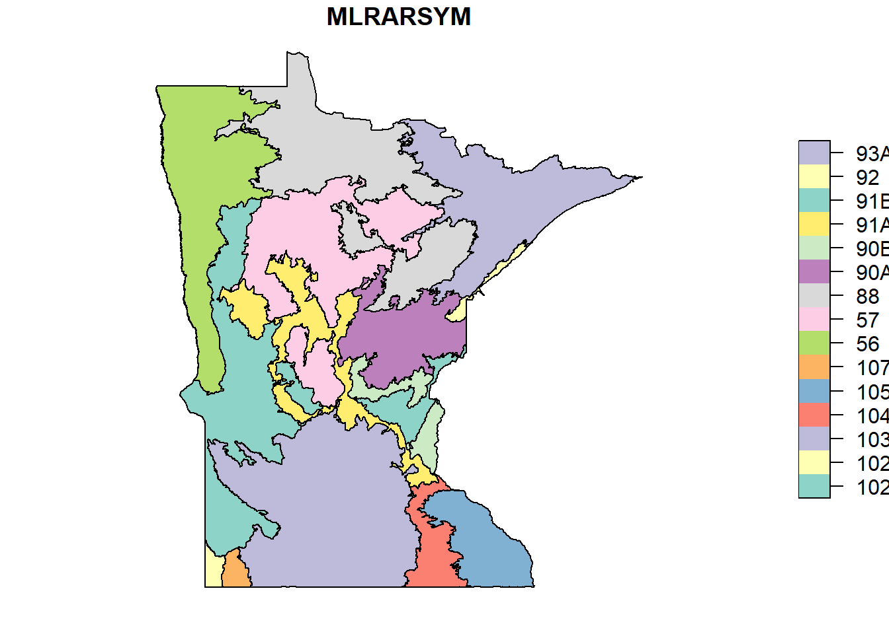
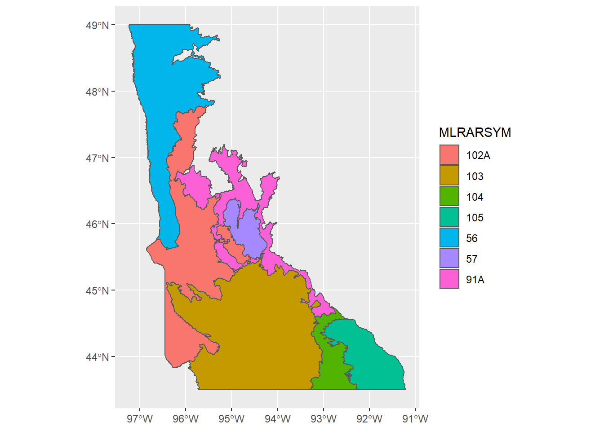
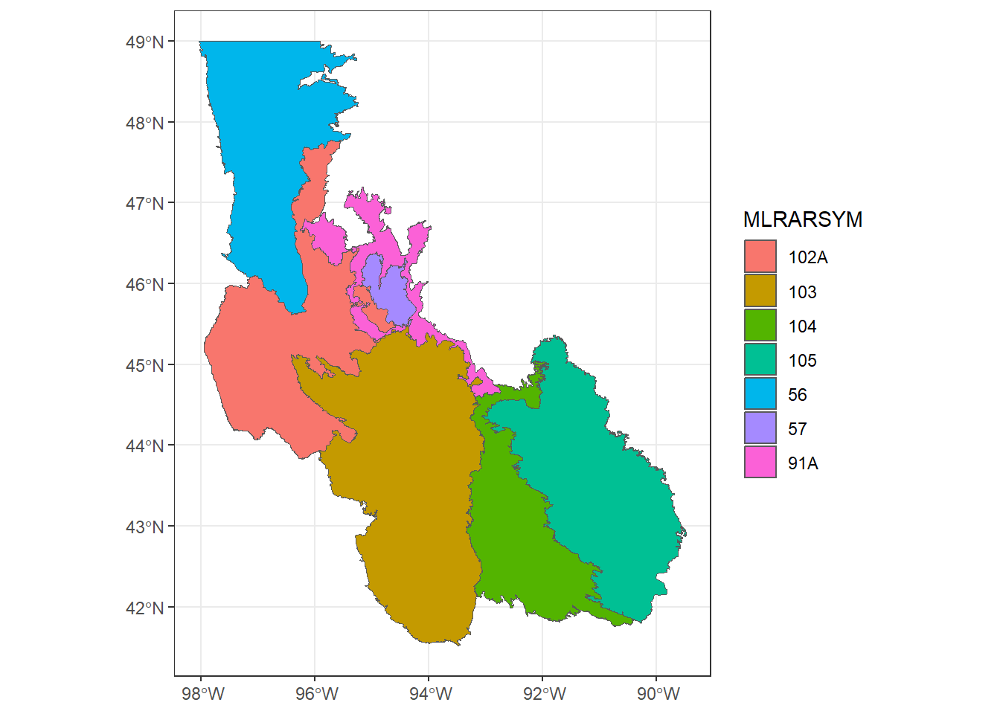

Format: ESRI Shape (not sure about this, other options are ESRI File GeoDatabase, separate ESRI shapefiles, separate ESRI GeoDatabase Feature Classes)
The code below is reproduced from create_aoi_shapefile.R.
# USA MLRAsmlras <-st_read("data/mlra/mlra_v42.shp")
Reading layer `mlra_v42' from data source
`C:\Users\Hava\backed_up\Documents\R\ch03-sh-cluster-20240114\data\mlra\mlra_v42.shp'
using driver `ESRI Shapefile'
Simple feature collection with 5306 features and 5 fields
Geometry type: POLYGON
Dimension: XY
Bounding box: xmin: -179.1334 ymin: -14.38165 xmax: 179.7882 ymax: 71.39805
Geodetic CRS: NAD83
# State boundarymn <-st_read("_qgis_files/shp_mn_state_boundary/mn_state_boundary.shp")
Reading layer `mn_state_boundary' from data source
`C:\Users\Hava\backed_up\Documents\R\ch03-sh-cluster-20240114\_qgis_files\shp_mn_state_boundary\mn_state_boundary.shp'
using driver `ESRI Shapefile'
Simple feature collection with 1 feature and 9 fields
Geometry type: MULTIPOLYGON
Dimension: XY
Bounding box: xmin: -97.23921 ymin: 43.49936 xmax: -89.49174 ymax: 49.38436
Geodetic CRS: NAD83
# confirm CRS the samest_crs(mn) ==st_crs(mlras)
[1] TRUE
# keep the intersection of MLRAs and MN boundarymn_mlras <-st_intersection(mn, mlras)
Warning: attribute variables are assumed to be spatially constant throughout
all geometries
# check out the resultplot(mn_mlras["MLRARSYM"])

Now that I have the MLRA-MN intersection, need to subset to only the target MLRAs (selected b/c we know we will have validation data broadly in these regions, and because they are domianted by agriculture, unlike the NE part of the state)
# keep only target MLRAs (agricultural regions of the state)# clipped to MN boundarykeep_mlrarsym <-c("56",# Red River Valley of the North"102A", # Rolling Till Prairie"91A", # Central MN Sandy Outwash"57", # Northern Minnesota Gray Drift"103", # Central IA and MN Till Prairies"104", # Eastern IA and MN Till Prairies"105") # Northern Mississippi Valley Loess Hills mn_targets <- mn_mlras %>%rownames_to_column(var ="rowid") %>%filter(MLRARSYM %in% keep_mlrarsym,# drops the northern portion of N MN Gray Drift # which was excluded b/c lack of validation pts rowid !="1.4") mn_targets %>%ggplot() +geom_sf(aes(fill = MLRARSYM))

# might want to make a map that shows the full extent of the MLRAs in MN, # extending out to neighborhing states. mn_mlras_extend <- mlras %>%filter(MLRARSYM %in% keep_mlrarsym) %>%# drops the northern portion of N MN Gray Drift # which was excluded b/c lack of validation pts slice(-2)ggplot(data = mn_mlras_extend) +geom_sf(aes(fill = MLRARSYM)) +theme_bw()

1.3 Minnesota County Boundaries
Downloaded the MDNR’s version of county boundaries from MN Geospatial
1.4 Minnesota State Boundary
MN State Boundary downloaded from US Census Cartographic Boundary Files
Download zip file of 2020 National Cultivated Layer
I think we want the “Cultivated Layer”, which is based on most recent 5 years of data, updated annually. Pixels are included in this layer if it was identified as cultivated in at least 2 of the last 5 years.
Soil Survey Staff. Gridded Soil Survey Geographic (gSSURGO) Database for Minnesota. United States Department of Agriculture, Natural Resources Conservation Service. Available online at https://gdg.sc.egov.usda.gov/. November, 22, 2021 (2021 official release).
# inspect layers in .gdbsf::st_layers("./data/gSSURGO_MN/gSSURGO_MN.gdb")
Driver: OpenFileGDB
Available layers:
layer_name geometry_type features fields
1 chaashto NA 223330 4
2 chconsistence NA 2794 10
3 chdesgnsuffix NA 62846 3
4 chfrags NA 321265 12
5 chorizon NA 130493 171
6 chpores NA 16 9
7 chstruct NA 110021 7
8 chstructgrp NA 95901 4
9 chtext NA 0 7
10 chtexture NA 318704 4
11 chtexturegrp NA 313739 6
12 chtexturemod NA 50000 3
13 chunified NA 240027 4
14 cocanopycover NA 50 6
15 cocropyld NA 34146 12
16 codiagfeatures NA 31760 12
17 coecoclass NA 52483 6
18 coeplants NA 25544 7
19 coerosionacc NA 5743 4
20 coforprod NA 2726 12
21 coforprodo NA 0 10
22 cogeomordesc NA 83667 8
23 cohydriccriteria NA 25091 3
24 cointerp NA 5698886 13
25 comonth NA 421728 17
26 component NA 42529 109
27 copm NA 49990 7
28 copmgrp NA 34883 4
29 copwindbreak NA 161238 8
30 corestrictions NA 4369 13
31 cosoilmoist NA 666791 9
32 cosoiltemp NA 96 9
33 cosurffrags NA 10955 15
34 cosurfmorphgc NA 17984 6
35 cosurfmorphhpp NA 28248 3
36 cosurfmorphmr NA 460 3
37 cosurfmorphss NA 42228 4
38 cotaxfmmin NA 33654 3
39 cotaxmoistcl NA 20332 3
40 cotext NA 42529 7
41 cotreestomng NA 32192 5
42 cotxfmother NA 31091 3
43 distinterpmd NA 11868 8
44 distlegendmd NA 92 11
45 distmd NA 92 4
46 featdesc NA 801 6
47 laoverlap NA 512 6
48 legend NA 92 14
49 legendtext NA 0 7
50 mapunit NA 10688 24
51 month NA 12 2
52 muaggatt NA 10688 40
53 muaoverlap NA 35224 4
54 mucropyld NA 23355 10
55 mutext NA 12230 7
56 sacatalog NA 92 11
57 sainterp NA 11868 9
58 sdvalgorithm NA 8 4
59 sdvattribute NA 211 53
60 sdvfolder NA 20 6
61 sdvfolderattribute NA 213 2
62 mdstatdomdet NA 6930 5
63 mdstatdommas NA 123 2
64 mdstatidxdet NA 172 4
65 mdstatidxmas NA 149 3
66 mdstatrshipdet NA 66 5
67 mdstatrshipmas NA 63 5
68 mdstattabcols NA 865 14
69 mdstattabs NA 75 5
70 FEATLINE Multi Line String 60902 5
71 FEATPOINT Point 254435 4
72 MULINE Multi Line String 0 5
73 MUPOINT Point 0 4
74 SAPOLYGON Multi Polygon 96 5
75 MUPOLYGON Multi Polygon 2123552 6
76 Valu1 NA 10688 58
77 MapunitRaster_10m Multi Polygon 1 3
78 VAT_MapunitRaster_10m NA 10688 3
79 fras_aux_MapunitRaster_10m NA 1 3
80 fras_blk_MapunitRaster_10m NA 180371 6
81 fras_bnd_MapunitRaster_10m NA 1 18
82 fras_ras_MapunitRaster_10m NA 1 3
crs_name
1 <NA>
2 <NA>
3 <NA>
4 <NA>
5 <NA>
6 <NA>
7 <NA>
8 <NA>
9 <NA>
10 <NA>
11 <NA>
12 <NA>
13 <NA>
14 <NA>
15 <NA>
16 <NA>
17 <NA>
18 <NA>
19 <NA>
20 <NA>
21 <NA>
22 <NA>
23 <NA>
24 <NA>
25 <NA>
26 <NA>
27 <NA>
28 <NA>
29 <NA>
30 <NA>
31 <NA>
32 <NA>
33 <NA>
34 <NA>
35 <NA>
36 <NA>
37 <NA>
38 <NA>
39 <NA>
40 <NA>
41 <NA>
42 <NA>
43 <NA>
44 <NA>
45 <NA>
46 <NA>
47 <NA>
48 <NA>
49 <NA>
50 <NA>
51 <NA>
52 <NA>
53 <NA>
54 <NA>
55 <NA>
56 <NA>
57 <NA>
58 <NA>
59 <NA>
60 <NA>
61 <NA>
62 <NA>
63 <NA>
64 <NA>
65 <NA>
66 <NA>
67 <NA>
68 <NA>
69 <NA>
70 NAD83 / Conus Albers
71 NAD83 / Conus Albers
72 NAD83 / Conus Albers
73 NAD83 / Conus Albers
74 NAD83 / Conus Albers
75 NAD83 / Conus Albers
76 <NA>
77 NAD83 / Conus Albers
78 <NA>
79 <NA>
80 <NA>
81 <NA>
82 <NA>
1.6.2 Process for .gdb > .tif
When you unzip gSSURGO, the data is in ESRI geodatabase (.gdb) format. I had thought this was a proprietary format that you had to open in an ESRI program like ArcMap, but this 2015 blog post from UCLA suggests otherwise (and helpfully explains some GDAL drivers for opening .gdbs). Also this blog post from 2021 walks through opening a .gdb in QGIS, but doesn’t mention a maximum file size (which I thought was an issue?). Anyway, I think QGIS froze when I tried to open the .gdb, so I used ArcMap instead to save it is a .tif, as describe below.
For future, gis.stackexchange post suggests that maybe using a database like spatialite or postgis would be helpful? Learn more about this, starting with the QGIS docs here (esp module 16 and 18). Also for future,some breadcrumbs that maybe .gdb IS in fact proprietary and must be opened using ESRI software is necessary. Distinction that there is no GDAL raster driver for ESRI GeoDatabase files (for vector I believe there is a driver, stumbled on some posts about this).
Other posts on this topic, both of which support the majority opinion that for rasters you really do need to open in ArcMap and export to get free of the .gdb :
(Side note, it is possible to access the tabular data in R without changing the .gdb format as demonstrated in the code chunk above, but for the spatial data I still needed to convert from .gdb to .tif).
ArcMap documentation explains that there are two ways to export a dataset (which is when you would have the option to change the file type). These are:
export raster datadialog box. I get this by right clicking the data layer listing in the side panel of ArcMap and selecting “export…”
copy raster tool. this tool can be found in Data management toolbox > raster toolset. The documentation is helpful. I used this to scale my pixels to a new bit depth (32bit -> 16bit) after replacing the values with my shorter MUKEYs using a reclass (see below). This reduced the overall file size of the tif significantly.
More about the export raster data dialog box (in ESRI’s words, from documentation linked above:
The dialog box allows you to export a raster dataset or a portion of a raster dataset. Unlike other raster import or export tools, the Export Raster Data dialog box gives you additional capabilities such as clipping via the current data frame area, clipping via a selected graphic, choosing the spatial reference of the data frame, using the current renderer, choosing the output cell size, or specifying the NoData value. In addition, you will be able to choose the output format for the raster dataset: BMP, ENVI, Esri BIL, Esri BIP, Esri BSQ, GIF, GRID, IMG, JPEG, JPEG 2000, PNG, TIFF, or exporting to a geodatabase.
I learned through trial and error about what happens when you lower the pixel depth even though you have values beyond the acceptable range: “If the pixel type is demoted (lowered), the raster values outside the valid range for that pixel depth will be truncated and lost”
1.6.3 Process for raster reclass (new MUKEYs)
Open .tif version of gSSURGO in ArcMap version XXX.
First need to create a table of new (shorter) MUKEY values. The table I provided to the raster reclass tool below was a text file of our cross-walk between the original map unit keys and our new, shorter map unit keys that allowed us to reduce the file size by going down to 16bit pixel depth. I created this original crosswalk table by:
Build pyramids
Build attribute table in Data Management Toolbox > Raster > Raster Properties > Build Raster Attribute Table
Open attribute table, add field called “new_mu” with “short integer type” (b/c only 2 bits to store short integers and we want to reduce size). Field properties “precision” leaving at 0. Now new_mu is the same as OID, just integers starting at 0 and going all the way to 7861
Saved attribute table as a .txt file for future reference.
Then, I performed a raster reclass by table. Had to turn on the 3D analyst tools before I could access them (they were grayed out). Using Customize menu > Extensions, turned on the 3D analyst tools and spatial analyst tools
Now in the ArcToolbox, going to 3D analyst tools > Raster Reclass > Reclass by Table
Input raster: MapunitRaster_10m_Clip1
Input remap table: mukey_new_crosswalk.txt
From value field: MUKEY
To value field: MUKEY
Output value fuield: MUKEY_new
Change missing values to NoData: DATA?
SUCCESS with raster reclass above. To save, I used “Export Raster Data”
Dialog box shows that the uncompressed size is 5.42 GB (!!), and the pixel depth is 16bit. I am assigning the NoData value as 7999 (our max MU value is 7861)
Saving to C:\Users\blair304\Desktop\MapunitRaster_10m_Clip1, name Reclass_tif1.tif, compression type NONE, compression quality set at default 75 (can’t see a way to change it?)
1.7 NCSS (Kellogg Lab) Data
Navigate to this link: https://ncsslabdatamart.sc.egov.usda.gov/
Click on “Advanced Query”
Specify:
Country: United States
State: Minnesota
Submission Date Jan 1, 2000 - Oct 17 2022
This returns 145 records.
Had to do the downloads separated by “data tiers” because I got a network timeout / server error when I tried highlighting everything. Here are the batches:
Carbon and extractions
PSDA & Rock frags, WAter content
Bulk density & moisture, water content
CEC and bases, salt, organic
Phosphorus
Taxonomy tier 1 & 2
pH & carbonates
1.7.1 Accessing data
For each chunk of data I downloaded (see bullet points above), have a folder with CSV files. Each folder contains a data dictionary, a “site” csv, and a “pedon” csv
latitude & longitude data are in the “site” files. Not clear if there is usually 1 pedon per site, and so this lat/lon are probably right? Or would there be multiple pedons at a given site, so the site location won’t be quite right?
with code in R/unzip_merge_ncss_data.R, created “NCSS_validation_point_key_site_pedon.csv”, which is all pedons with location data (56 total)
Need to match up the right lab methods from the NCSS dataset so they correspond with the data I pulled from gSSURGO. Looking up more info in the gSSURGO metadata about these to see if methods are listed
See notes below on ksat, don’t have this data for now, think it’s not the most important for validation
x AWC
volume fraction, diff b/t water contents at 1/10 or 1/3 and 15 bar
0 or 1/3 bar and 15 bars tension
x fragvol_r
volume percentage of horizon occupied by 2mm or larger fraction (20mm or larger for wood fragments) on a whole soil basis
? I found weight fractions but not volume fractions in the PSDA and rock fragments table.
I couldn’t find ksat data in any of the NCSS tables. Suspect it might be because it is estimated using some kind of pedotransfer function. I found a Masters thesis from 2017 by Joshua Randall Weaver that seems to confirm this based on references in their literature review. The thesis is “Comparison of Saturated Hydraulic Conductivity using Geospatial Analysis of Field and SSURGO data for septic tank suitability assessment”, Clemson University. On pg 2 (introduction), Weaver states
“Currently, SSURGO-reported saturated hydraulic conductivity (Ksat) data are often estimated from particle-size analysis (PSA) data from specific locations and then extrapolated across large areas based on soil map units (O’Neal, 1952; Rawls and Brakensiek, 1983; Williamson et al., 2014).” Rare comparisons of SSURGO recorded PSA-derived Ksat values are often different from site-specific field Ksat measurements (Hart et al. 2008). The freely available PSA-derived Ksat data from SSURGO is frequently used for regional and national modelling for the purposes of environmental management, but spatial variability associated with using SSURGO data instead of site-specific data is largely unknown (Hoos and McMahon, 2009). ”
For now I’m not going to worry too much about Ksat data, as it doesn’t seem like the most important thing to validate (very few SH studies collect it right now, it’s highly variable, it will be related to particle size). So I’m leaving this aside for now, but wanted to document in case I come back in the future.
1.8 NOAA NCEI U.S. Climate Normals - Station Data
On January 9, 2023 Access the map interface for US Climate Normals Data at https://www.ncei.noaa.gov/maps/normals
Originally did to to access station data, but later also to download climate rasters for the climate clustering analysis (see 32-sample-climate-vars.qmd)
Select 1991-2020 Climate Normals in the side bar, Annual Normals (hourly, daily, and monthly are also available)
Select the wrench icon next to the selected dataset in the sidebar to open the “Tools” for that dataset. Use the “identify” (i) tool to pick a station and learn it’s name and ID number.
I picked two stations representing the far NW and far SE corners of my area of interest:
One in the far northwest (Hallock, MN USC00213455) and one in the far southeast (Caledonia MN, USC00211198)
NW: Hallock, MN MAT is 39.1 F and MAP is 22.31 inches
SE: Caledonia, MN MAT is 45.5 F and MAP is 38.32 in
Rather than download the full dataset, I used the station names I had identified to see a quick summary with the “U.S. Climate Normals Quick Access” Tool.
Selected the “Annual/Seasonal Tab” and 1991-2020 tab
Recommended dataset citation, per metadata page, is Arguez, A., I. Durre, S. Applequist, R. Vose, M. Squires, X. Yin, R. Heim, and T. Owen, 2012: NOAA’s 1981-2010 climate normals: An overview. Bull. Amer. Meteor. Soc., 93, 1687-1697. (this is saved in my Zotero library already)
Quick conversions for getting the MAT and MAP at the NW and SE corners of my area of interest:
# MAT convert from F to C: subtract 32 and multiply by 5/9(39.1-32)*(5/9) # Hallock (NW)
[1] 3.944444
(45.5-32)*(5/9) # Caledonia (SE)
[1] 7.5
# MAP convert inches to mm (1in=2.54cm, 10mm = 1cm)22.31*2.54*10# Hallock (NW)